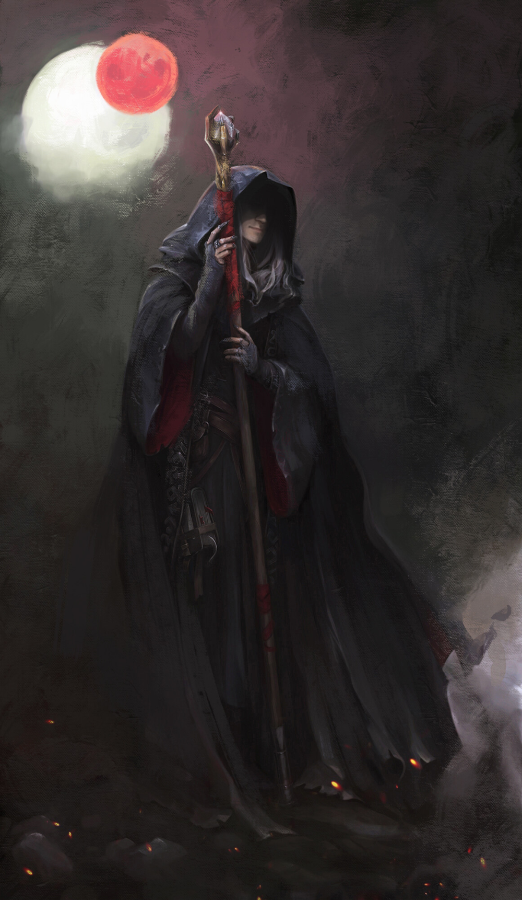

Alnur

Há muito tempo os Outubristas vêm tentando corrigir o maior erro que já cometeram, que foi entregar o caos ao reino material “Criella Damar, a Guardiã dos Segredos do Castelo de Vidro”. Havel era um dos maiores conhecedor e protetor dos planos dos deuses, ele arquitetava e planejava mundos para que os seres supremos ficassem satisfeitos no local em que estavam. O trabalho de um Outubrista era de manter os deuses a salvo de ameaças externas e de suas próprias frustrações, de fazer o elo entre o mundo material e a crença nos deuses, pois isso os mantinham satisfeitos. E Havel guardava bem a todos.
Habilidades conhecidas:
Sem esperança: O luar vermelho toma conta do cenário, aumentando o poder do Alnur. Ele lança uma rajada de Mácula causando 1 de dano ao PV do alvo e recuperando até 1 de PV perdido. Após a primeira vez ativada, todos os ataques de Alnur durante o combate, reativam Sem Esperança.